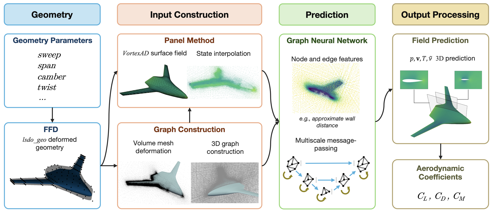
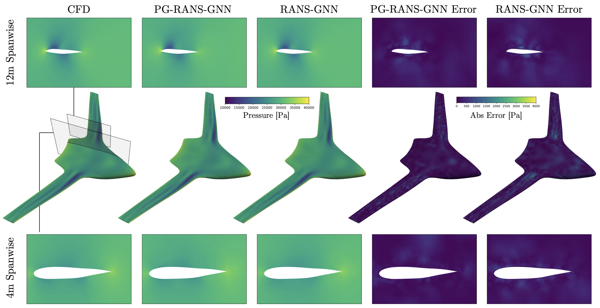
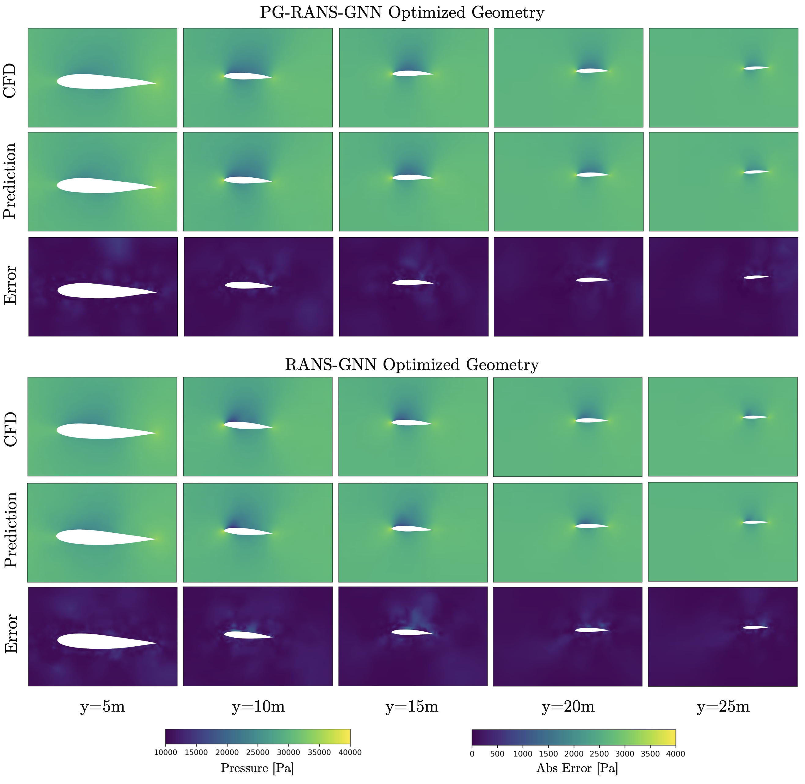
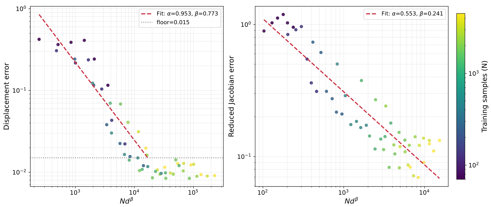

Scientific machine learning for MDO
- Context
- Neural networks can approximate the map from design variables to spatial solution fields for repeated engineering analyses.
- Gap
- High-fidelity field and derivative data are expensive to generate, especially when many design variables influence the solution.
- Research goal
- Improve surrogate accuracy and data efficiency by incorporating lower-fidelity physics and compressed sensitivity information into learning.
Selected studies
ReferencesImproving learned flow fields with lower-fidelity physics
A graph neural network uses a differentiable panel-method solution to predict RANS flow fields around blended-wing-body aircraft. Trained on 100 CFD cases, the physics-guided model improves volume-field predictions over the data-only network. CFD reanalysis of its optimized geometry finds lift and drag errors below 6%.
Mark Sperry, John T. Hwang. Multifidelity Surrogate Modeling for 3D Aerodynamic Flow Field Prediction Using Graph Neural Networks. AIAA AVIATION 2026 Forum, 2026. Distribution Statement A: Approved for public release; distribution is unlimited. PA# AFRL-2026-2231
@inproceedings{sperry2026multifidelity,
author = {Mark Sperry and John T. Hwang},
title = {Multifidelity Surrogate Modeling for 3D Aerodynamic Flow Field Prediction Using Graph Neural Networks},
booktitle = {AIAA AVIATION 2026 Forum},
year = {2026},
doi = {10.2514/6.2026-4802},
url = {https://doi.org/10.2514/6.2026-4802},
note = {Metadata verification: Crossref title}
}





Learning design sensitivities from compressed derivative data
Reduced-Jacobian supervision trains the full state field alongside a compressed derivative representation, making derivative-data collection scale with basis size rather than full input or state dimension. Structural-wing tests with 5–161 inputs show lower displacement and reduced-Jacobian errors than training on state values alone.
Michael Warner, John T. Hwang. Reduced Jacobian Supervision for Data-Efficient Operator Learning in High-Dimensional Design Spaces. AIAA AVIATION 2026 Forum, 2026. Distribution Statement A: Approved for public release; distribution is unlimited. PA# AFRL-2026-2144
@inproceedings{warner2026reduced,
author = {Michael Warner and John T. Hwang},
title = {Reduced Jacobian Supervision for Data-Efficient Operator Learning in High-Dimensional Design Spaces},
booktitle = {AIAA AVIATION 2026 Forum},
year = {2026},
doi = {10.2514/6.2026-4806},
url = {https://doi.org/10.2514/6.2026-4806},
note = {Metadata verification: Crossref title}
}

References
- Mark Sperry, John T. Hwang. Multifidelity Surrogate Modeling for 3D Aerodynamic Flow Field Prediction Using Graph Neural Networks. AIAA AVIATION 2026 Forum, 2026. Distribution Statement A: Approved for public release; distribution is unlimited. PA# AFRL-2026-2231DOIPDF
@inproceedings{sperry2026multifidelity, author = {Mark Sperry and John T. Hwang}, title = {Multifidelity Surrogate Modeling for 3D Aerodynamic Flow Field Prediction Using Graph Neural Networks}, booktitle = {AIAA AVIATION 2026 Forum}, year = {2026}, doi = {10.2514/6.2026-4802}, url = {https://doi.org/10.2514/6.2026-4802}, note = {Metadata verification: Crossref title} } - Michael Warner, John T. Hwang. Reduced Jacobian Supervision for Data-Efficient Operator Learning in High-Dimensional Design Spaces. AIAA AVIATION 2026 Forum, 2026. Distribution Statement A: Approved for public release; distribution is unlimited. PA# AFRL-2026-2144DOIPDF
@inproceedings{warner2026reduced, author = {Michael Warner and John T. Hwang}, title = {Reduced Jacobian Supervision for Data-Efficient Operator Learning in High-Dimensional Design Spaces}, booktitle = {AIAA AVIATION 2026 Forum}, year = {2026}, doi = {10.2514/6.2026-4806}, url = {https://doi.org/10.2514/6.2026-4806}, note = {Metadata verification: Crossref title} } - Michael A. P. Warner, John T. Hwang. Structured Reduced-Basis Neural Operators for PDEs on Complex Geometries. ASME IDETC/CIE 2026 · DETC2026-194246, 2026. Distribution Statement A: Approved for public release; distribution is unlimited. PA# AFRL-2026-1143 Manuscript
Research connections